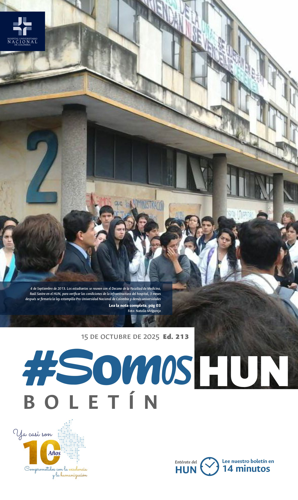
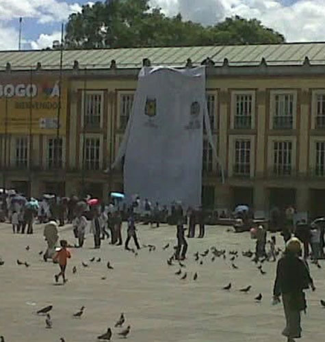
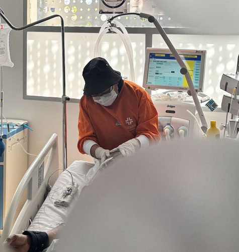
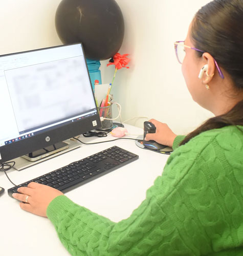
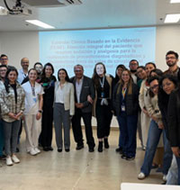
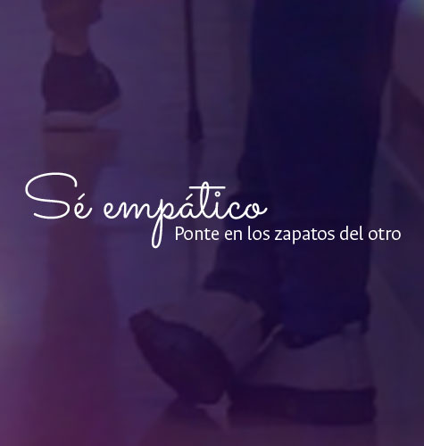

Ver todos los boletines
Los estudiantes que abrieron las puertas del HUN
En el año 2011, los pasillos de la Facultad de Medicina de la Universidad Nacional de Colombia (UNAL) se convirtieron en una olla de efervescencia. A la entrada del edificio 471, José Felix Patiño, los carteles pintados a mano hablaban de dignidad, docencia y futuro.Leer más

La salud entre dos saberes: Mitú, guaviare y Bogotá
En la Unidad de Cuidados Intensivos del HUN, un hecho poco común reunió dos formas de entender la salud. A la cabecera de un paciente indígena, internado tras una compleja cirugía, una sabedora tradicional del Vaupés realizó un procedimiento ancestral de sanación.Leer más

¿Qué es la glosa y por qué debemos prestarle atención?
La glosa es una observación o rechazo parcial o total que las Entidades Responsables de Pago (ERP) realizan sobre las facturas presentadas por los prestadores de servicios de salud. En términos sencillos, es la diferencia entre lo facturado y lo efectivamente reconocido o pagado.Leer más

Se llevó a cabo consenso institucional del ECBE para sedación y analgesia en procedimientos fuera de quirófano
Este hito marca un avance en la estandarización de protocolos clínicos que fortalecen la seguridad del paciente, el trabajo interdisciplinario y la calidad de nuestros servicios .Leer más

El Muro de la Empatía: una muestra de gratitud hacia todos los procesos del HUN
El reciente ejercicio del Muro de la Empatía físico y en la Intranet dejó ver lo mejor de nuestra cultura institucional: el reconocimiento entre colegas, la gratitud sincera y el orgullo de pertenecer a un equipo que trabaja con propósito.Leer más